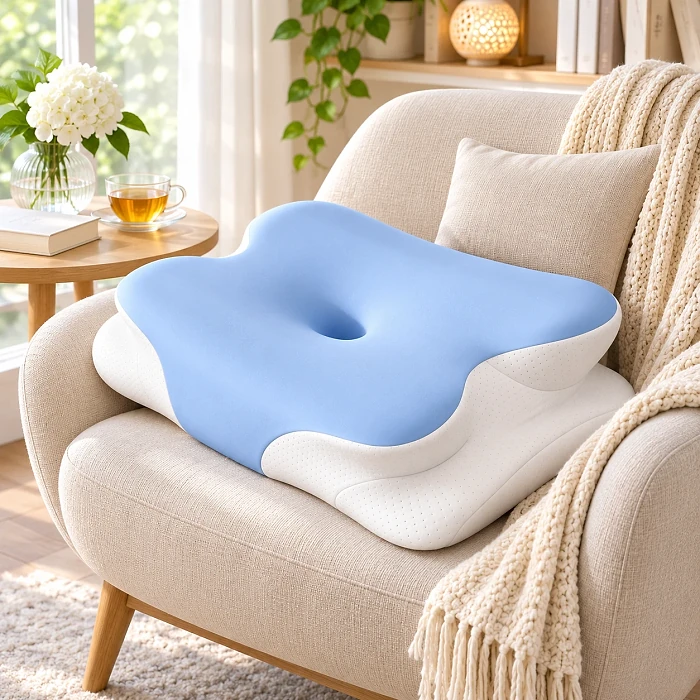

Melara Airとは？どのように機能するのか？
Melara Airは、首と肩、そして背骨の自然なラインを支えることを目的に設計されたエルゴノミクス（人間工学）枕です。公式サイトによると、本体にはプレミアムメモリーフォームが使われており、頭と首の形に合わせてゆっくりと沈み込み、体圧を分散しながらフィットする構造になっています。サイズは幅42cm・長さ62cmと案内されており、一般的な枕と同じようにベッドで使えるサイズ感です。
最大の特徴は、公式サイトで「バタフライ形状」と紹介されている独特の輪郭です。中央には頭を受け止めるくぼみがあり、その左右には肩の位置に合わせた「肩アーチ」と、頭が横に倒れすぎないよう支える「側面サポートウイング」が設けられています。この形状によって、寝返りの多い夜でも頭と首が自然な位置に保たれ、首から肩にかけての余分な緊張を減らすよう設計されているとのことです。
公式サイトは、使い古された枕やサポート力の弱い枕が一晩中沈み込んで平らになり、首が不自然な角度で固定されてしまう点を問題として挙げています。Melara Airは独自のサポートゾーンによって背骨を理想的なアライメントに近い状態に保ち、朝までリラックスした姿勢をキープしやすくすることを目指した製品です。
いびきとの関係についても触れられています。公式サイトでは、いびきの原因のひとつとして寝姿勢の悪さによる気道の圧迫が考えられるとし、首の角度を整えることで気道が確保されやすい姿勢をサポートすると説明しています。ただし、これはあくまで枕による姿勢のサポートであり、いびきや睡眠時無呼吸症候群を治療するものではありません。
素材面では、冷却効果、低アレルゲン素材、通気性設計がうたわれており、熱がこもりにくい寝心地を重視した作りです。寝心地や感じ方には、体格や寝姿勢、マットレスの硬さなどによって個人差がある点も、あらかじめ知っておくとよいでしょう。
Melara Airの特徴
公式サイトで紹介されているMelara Airの主な特徴は次のとおりです。
バタフライ形状：頭と首を自然な位置に誘導するよう設計された、左右対称の独特なシルエット。
肩アーチ（肩圧解放設計）：横向きで寝たときに肩が当たる部分を逃がし、肩周りの緊張をやわらげることを目的とした構造。
側面サポートウイング：頭が左右に倒れすぎないよう支え、首のアライメントを保つためのサイドパーツ。
プレミアムメモリーフォーム：体圧を分散し、形状が持続するふっくらとした寝心地。
冷却効果のあるカバー：熱を分散し、蒸れにくい寝心地を目指した表面素材。
低アレルゲン素材・通気性設計：こだわりの層構造で、快適な温度を保ちやすい作り。
サイズ：幅42cm・長さ62cm。
公式サイトの写真では、水色のカバーと白いフォーム層を重ねた二層構造の枕が紹介されています。一方で、フォームの密度や高さ（厚み）の具体的な数値、カバーの素材名、洗濯方法、原産国、第三者機関による試験結果などは公式ページに記載されていません。高さの好みは人によって大きく異なるため、気になる点は購入前にカスタマーサポートへ確認しておくと安心です。
Melara Airの使い方
使い方はシンプルで、普段の枕と置き換えてベッドで使用するだけです。公式サイトによると、Melara Airは横向き、仰向け、うつ伏せのいずれの寝姿勢にも対応するよう設計されています。中央のくぼみに後頭部を乗せ、首のカーブが枕の盛り上がった部分に自然に沿うように位置を調整してください。
横向きで寝る場合は、肩をアーチ部分に合わせ、側面のサポートウイングに頭を預けると、首と背骨が一直線に近い状態を保ちやすくなります。仰向けの場合は、肩が枕の手前に来るように置き、頭が後ろに反りすぎたり、あごを引きすぎたりしない位置を探すのがポイントです。
メモリーフォームの枕は、新しい形に体が慣れるまで数日から1週間ほどかかることがあります。公式サイトのよくある質問では、早い方では初日からより良い休息を感じられるとされていますが、感じ方には個人差があります。最初の数晩だけで判断せず、しばらく使い続けてから評価するのがおすすめです。
開封直後はフォーム特有のにおいがすることがあるため、風通しのよい場所で陰干ししてから使うとよいでしょう（これはメモリーフォーム製品に共通する一般的な注意点です）。首や肩に強い痛みやしびれがある方、いびきが大きく睡眠中に呼吸が止まると指摘されたことがある方は、枕を変える前に医師に相談してください。
Melara Air – 返金ポリシー
公式サイトのよくある質問によると、Melara Airには30日間の返金保証が付いており、期待どおりでなかった場合でも返品・返金に対応するとされています。
詳しい条件は公式サイトの「返品・返金ポリシー」に記載されています。それによると、返品期限は商品到着から30日間で、対象となるのは製品が新品の状態（改造や変更がされていないもの）で元のパッケージに入っており、カスタマーサービスが指定する返品先の住所に発送された場合です。なお、同ポリシーには、ここに定める場合を除いてすべての販売は最終的なものであるとも書かれています。
手続きとしては、まず support@melarapro.com に連絡して返送先を確認し、発送後に追跡番号を伝えます。商品の受領と検査のあとに承認または不承認が通知され、承認された返品は30日以内に処理されると案内されています。返金は元のお支払い方法へ行われるか、同じ商品との交換となり、ストアクレジットは提供されません。クレジットカードへの返金は、カード会社によっては最大20営業日かかる場合があります。
注意したいのは、返送にかかる配送費用はお客様の負担となり、最初の配送にかかった費用も返金の対象外である点です。試しに使ってみる場合は、外箱や包装を捨てずに保管し、到着日、注文番号、確認メール、返送時の追跡番号を記録しておきましょう。条件は変更される可能性があるため、注文前に公式サイトで最新の内容を確認してください。
Melara Airの口コミ・評判
-
 Edel — イタリア購入確認済み
Edel — イタリア購入確認済み
「製品の品質に大満足です。涼しくて快適な素材。首へのサポートも最高です。」
-
 John — シンガポール購入確認済み
John — シンガポール購入確認済み
「この枕は、仰向けで寝る私にも、横向きで寝る妻にも、とても快適だとわかりました。」
-
Pearl — アメリカ購入確認済み
「非常に快適で、健康にも良さそうな枕をデザインしていただき、感謝しています。」
Melara Air – どこで買える？
公式サイトによると、Melara Airは公式ウェブサイト（melaraair.com）から直接注文できるオンライン販売の製品です。公式ページには日本語版が用意されており、注文手続きや配送先の選択、お問い合わせ先もサイト上にまとめられています。
人気のある寝具は、ネット通販やフリマアプリなどで類似品や模倣品が出回ることがあります。見た目がよく似た枕でも、フォームの品質や形状、カバーの素材が異なる場合があり、その場合は公式サイトの返金保証も適用されません。正規の保証やサポートを受けるためには、販売元から直接購入するのが確実です。
公式サイトでは、一般のお問い合わせは support@melarapro.com、ご注文に関するお問い合わせは orders@melarapro.com で受け付けているとされています。購入後に不明な点が出てきた場合に備えて、注文確認メールは大切に保管しておきましょう。
本物の製品を確実に手に入れるために、ほとんどのユーザーは公式サイトから購入しています。
Melara Airは詐欺？
公式サイトの情報を確認する限り、Melara Airは実在するエルゴノミクス枕で、返品・返金ポリシー、利用規約、プライバシーポリシー、カスタマーサポートの連絡先が公開されています。サイトはMelara Pro LLCの名義で運営されており、30日間の返金保証も明記されています。こうした点から、販売の仕組みとしては一般的なオンラインショップと同じ形をとっていると言えます。
一方で、購入前に知っておきたい点もあります。公式サイトでは、タイトルや本文で「Melara Air」、よくある質問や比較の部分で「Melara Max」という名称が使われており、表記が統一されていません。また、口コミは公式サイトに掲載されたものであり、第三者のレビューサイトで検証されたものではありません。枕の高さや硬さの具体的な数値も公開されていないため、自分に合うかどうかは実際に使ってみないとわからない部分があります。
首や肩の負担、いびきなどの悩みは原因が人によって異なり、枕だけですべてが解決するわけではありません。Melara Airは医療機器ではなく、寝姿勢をサポートするための寝具として考えるのが妥当です。返金保証の条件を理解したうえで試すのであれば、リスクを抑えて検討できる選択肢と言えるでしょう。
製品の詳細や現在の在庫状況を確認したい方にとって、Melara Airの公式サイトが最も安全な選択肢です。